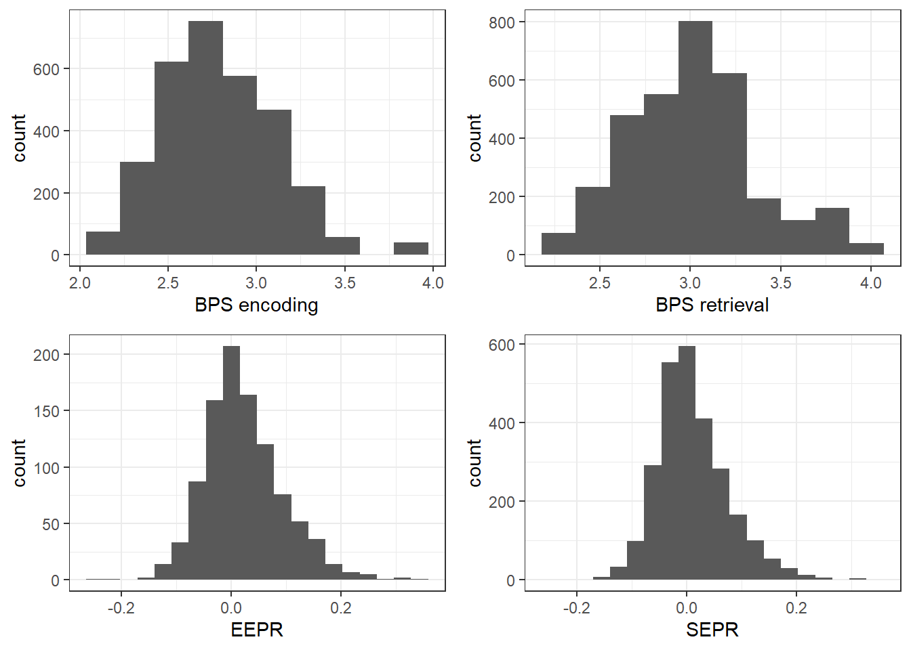

Analysis
Nico Bast
23 2 2021
Last updated: 2021-02-23
Checks: 6 1
Knit directory: Paper_RingMemoryPD/
This reproducible R Markdown analysis was created with workflowr (version 1.6.2). The Checks tab describes the reproducibility checks that were applied when the results were created. The Past versions tab lists the development history.
Great! Since the R Markdown file has been committed to the Git repository, you know the exact version of the code that produced these results.
Great job! The global environment was empty. Objects defined in the global environment can affect the analysis in your R Markdown file in unknown ways. For reproduciblity it’s best to always run the code in an empty environment.
The command set.seed(20210216) was run prior to running the code in the R Markdown file. Setting a seed ensures that any results that rely on randomness, e.g. subsampling or permutations, are reproducible.
Great job! Recording the operating system, R version, and package versions is critical for reproducibility.
- accuracy_between_groups
- distribution_PD
- EEPR
- effects_on_accuracy_logistic_regression
- effects_on_accuracy_separate_models
- figure EEPR
- figure_effects_on_accuracy_posthoc
- figure_preprocessed_data
- load_preprocessed_data
- remember_vs_notremember
- sample_description
- SEPR
- SEPR_figure
- session-info-chunk-inserted-by-workflowr
To ensure reproducibility of the results, delete the cache directory analysis_PDmemory_cache and re-run the analysis. To have workflowr automatically delete the cache directory prior to building the file, set delete_cache = TRUE when running wflow_build() or wflow_publish().
Great job! Using relative paths to the files within your workflowr project makes it easier to run your code on other machines.
Great! You are using Git for version control. Tracking code development and connecting the code version to the results is critical for reproducibility.
The results in this page were generated with repository version e198257. See the Past versions tab to see a history of the changes made to the R Markdown and HTML files.
Note that you need to be careful to ensure that all relevant files for the analysis have been committed to Git prior to generating the results (you can use wflow_publish or wflow_git_commit). workflowr only checks the R Markdown file, but you know if there are other scripts or data files that it depends on. Below is the status of the Git repository when the results were generated:
Ignored files:
Ignored: .Rhistory
Ignored: .Rproj.user/
Ignored: analysis/analysis_PDmemory_cache/
Untracked files:
Untracked: .PowerFolder/
Untracked: code/analysis_RingPD.R
Untracked: code/analysis_RingPD_020720.R
Untracked: code/analysis_RingPD_021220.R
Untracked: code/analysis_encoding_RingPD.R
Untracked: data/coding file eye RK.xlsx
Untracked: data/encoding_df_200120.Rdata
Untracked: data/main_df_120819.Rdata
Untracked: data/main_df_preprocessed_220221.Rdata
Untracked: data/raw_df_encoding_170120.Rdata
Untracked: desktop.ini
Untracked: manuscript/
Untracked: output/figure1_concept_NE_effects.png
Untracked: output/figure3_histogram_heatmap.tiff
Untracked: output/figure4_encodingeffect_group.tiff
Untracked: output/figure5_memoryeffect_group.tiff
Untracked: output/figure6_PDeffects_on_Acc.tiff
Untracked: output/old/
Untracked: output/supplements_table3.pdf
Untracked: output/supplements_table4.pdf
Untracked: output/table1_sampledescription.pdf
Untracked: output/table2_model_logistic_regression.pdf
Untracked: project_init_workflow_RingMemoryPD.R
Untracked: ~$ructure_manuscript.docx
Note that any generated files, e.g. HTML, png, CSS, etc., are not included in this status report because it is ok for generated content to have uncommitted changes.
These are the previous versions of the repository in which changes were made to the R Markdown (analysis/analysis_PDmemory.Rmd) and HTML (docs/analysis_PDmemory.html) files. If you’ve configured a remote Git repository (see ?wflow_git_remote), click on the hyperlinks in the table below to view the files as they were in that past version.
| File | Version | Author | Date | Message |
|---|---|---|---|---|
| Rmd | e198257 | nicobast | 2021-02-23 | Publish the initial files for myproject |
| html | d49f22c | nicobast | 2021-02-23 | Build site. |
| Rmd | 0304fef | nicobast | 2021-02-23 | Publish the initial files for myproject |
Load preprocessed data
[1] "data_modality" "df" "df_demo" "df_enc"
[5] "df_trial" "df_trial_enc" "df_trial_old" "folder_to_data"
[9] "home_path" "path_to_data" "path_to_project"figure 3: preprocessed data
png
2 Sample description
|
ASD (21m, 3f)
|
TD (23m, 7f)
|
difference
|
effect size
|
|||||||
|---|---|---|---|---|---|---|---|---|---|---|
| mean | SD | range | mean | SD | range | F | p | d | CI-95% | |
| age | 41.83 | 11.56 | 26.59 - 64.23 | 43.98 | 12.69 | 22.46 - 65.14 | 0.41 | 0.52 | 0.18 | -0.36 , 0.72 |
| VIQ | 110.17 | 14.33 | 81 - 130 | 113.27 | 14.01 | 82 - 139 | 0.64 | 0.43 | 0.22 | -0.32 , 0.76 |
| PIQ | 106.46 | 15.22 | 77 - 128 | 106.20 | 13.83 | 75 - 136 | 0 | 0.95 | -0.02 | -0.55 , 0.52 |
| FIQ | 110.04 | 14.72 | 81 - 133 | 110.10 | 13.45 | 77 - 135 | 0 | 0.99 | 0 | -0.54 , 0.55 |
| AQ | 36.04 | 6.31 | 22 - 47 | 14.97 | 6.66 | 1 - 26 | 139.98 | 0 | -3.3 | -4.38 , -2.2 |
| recognition accuracy | 0.74 | 0.16 | 0.25 - 0.95 | 0.85 | 0.12 | 0.5 - 1 | 6.1 | 0.02 | 0.77 | 0.11 , 1.41 |
| BPS encoding | 2.85 | 0.37 | 2.27 - 3.8 | 2.76 | 0.33 | 2.06 - 3.52 | 0.8 | 0.38 | -0.26 | -0.82 , 0.31 |
| BPS retrieval | 3.07 | 0.38 | 2.46 - 3.91 | 2.99 | 0.36 | 2.21 - 3.84 | 0.55 | 0.46 | -0.21 | -0.74 , 0.34 |
| EEPR | 0.00 | 0.01 | -0.02 - 0.01 | 0.00 | 0.01 | -0.02 - 0.02 | 2.22 | 0.14 | 0.46 | -0.16 , 1.07 |
| SEPR | 0.02 | 0.03 | -0.04 - 0.09 | 0.02 | 0.03 | -0.06 - 0.07 | 0.04 | 0.84 | -0.06 | -0.66 , 0.53 |
Note that HTML color may not be displayed on PDF properly.save_kable will have the best result with magick installed. Recognition accuracy
Acc
group 0 1
ASD 0.24 0.76
TD 0.15 0.85ASD: ASD
vars n mean sd median trimmed mad min max range skew kurtosis se
X1 1 18 0.74 0.16 0.78 0.76 0.1 0.25 0.95 0.7 -1.64 2.81 0.04
------------------------------------------------------------
ASD: TD
vars n mean sd median trimmed mad min max range skew kurtosis se
X1 1 27 0.85 0.12 0.86 0.86 0.08 0.5 1 0.5 -1 0.67 0.02
Welch Two Sample t-test
data: acc_agg by ASD
t = -2.3525, df = 30.484, p-value = 0.02529
alternative hypothesis: true difference in means is not equal to 0
95 percent confidence interval:
-0.19271890 -0.01366755
sample estimates:
mean in group ASD mean in group TD
0.7425592 0.8457524 Generalized linear mixed model fit by maximum likelihood (Laplace
Approximation) [glmerMod]
Family: binomial ( logit )
Formula: Acc ~ group + (1 | word) + (1 | PIC)
Data: df_trial_old
AIC BIC logLik deviance df.resid
1260.5 1281.3 -626.2 1252.5 1344
Scaled residuals:
Min 1Q Median 3Q Max
-3.4703 0.2907 0.4013 0.5008 0.9386
Random effects:
Groups Name Variance Std.Dev.
PIC (Intercept) 0.35056 0.5921
word (Intercept) 0.04686 0.2165
Number of obs: 1348, groups: PIC, 48; word, 4
Fixed effects:
Estimate Std. Error z value Pr(>|z|)
(Intercept) 1.1851 0.2095 5.658 1.53e-08 ***
groupTD 0.6568 0.2345 2.801 0.0051 **
---
Signif. codes: 0 '***' 0.001 '**' 0.01 '*' 0.05 '.' 0.1 ' ' 1
Correlation of Fixed Effects:
(Intr)
groupTD -0.649Computing profile confidence intervals ... 2.5 % 97.5 %
groupTD 1.934792 1.20925 3.158193 contrast estimate SE df asymp.LCL asymp.UCL
TD - ASD 0.657 0.234 Inf 0.197 1.12
Results are given on the log odds ratio (not the response) scale.
Confidence level used: 0.95 (Intercept) groupTD
3.271111 1.928536 EEPR between groups
EEPR model summary
Type III Analysis of Variance Table with Satterthwaite's method
Sum Sq Mean Sq NumDF DenDF F value Pr(>F)
group 3.5117 3.5117 1 42.963 4.1365 0.04817 *
---
Signif. codes: 0 '***' 0.001 '**' 0.01 '*' 0.05 '.' 0.1 ' ' 1Linear mixed model fit by REML. t-tests use Satterthwaite's method [
lmerModLmerTest]
Formula: scale(rpd_enc) ~ group + (1 | PIC) + (1 | stimulus)
Data: df_trial_old
REML criterion at convergence: 3520.2
Scaled residuals:
Min 1Q Median 3Q Max
-5.5305 -0.4688 0.0216 0.5291 3.8716
Random effects:
Groups Name Variance Std.Dev.
PIC (Intercept) 0.08577 0.2929
stimulus (Intercept) 0.08261 0.2874
Residual 0.84895 0.9214
Number of obs: 1288, groups: PIC, 47; stimulus, 4
Fixed effects:
Estimate Std. Error df t value Pr(>|t|)
(Intercept) -0.1513 0.1663 4.9916 -0.910 0.4047
groupTD 0.2135 0.1049 42.9626 2.034 0.0482 *
---
Signif. codes: 0 '***' 0.001 '**' 0.01 '*' 0.05 '.' 0.1 ' ' 1
Correlation of Fixed Effects:
(Intr)
groupTD -0.401Note: Use 'contrast(regrid(object), ...)' to obtain contrasts of back-transformed estimates contrast estimate SE df lower.CL upper.CL
ASD - TD -0.213 0.105 43.9 -0.425 -0.0018
Note: contrasts are still on the scale scale
Degrees-of-freedom method: kenward-roger
Confidence level used: 0.95 Type III Analysis of Variance Table with Satterthwaite's method
Sum Sq Mean Sq NumDF DenDF F value Pr(>F)
group 0.024039 0.024039 1 50.998 0.3008 0.5858Linear mixed model fit by REML. t-tests use Satterthwaite's method [
lmerModLmerTest]
Formula: scale(pd) ~ group + (1 | PIC) + (1 | stimulus)
Data: df_trial_enc
REML criterion at convergence: 982.1
Scaled residuals:
Min 1Q Median 3Q Max
-3.5625 -0.6088 -0.0445 0.5321 5.5607
Random effects:
Groups Name Variance Std.Dev.
PIC (Intercept) 0.955917 0.97771
stimulus (Intercept) 0.003005 0.05482
Residual 0.079927 0.28271
Number of obs: 2076, groups: PIC, 53; stimulus, 4
Fixed effects:
Estimate Std. Error df t value Pr(>|t|)
(Intercept) 0.08958 0.20592 52.53322 0.435 0.665
group2 -0.14877 0.27126 50.99787 -0.548 0.586
Correlation of Fixed Effects:
(Intr)
group2 -0.746figure 4: EEPR
`geom_smooth()` using method = 'gam' and formula 'y ~ s(x, bs = "cs")'png
2 `geom_smooth()` using method = 'gam' and formula 'y ~ s(x, bs = "cs")'
SEPR between groups
SEPR model summary
Type III Analysis of Variance Table with Satterthwaite's method
Sum Sq Mean Sq NumDF DenDF F value Pr(>F)
group 0.285 0.285 1 51.49 0.3468 0.55849
oldnew 50.663 50.663 1 2599.20 61.5456 6.265e-15 ***
group:oldnew 4.085 4.085 1 2597.51 4.9624 0.02599 *
---
Signif. codes: 0 '***' 0.001 '**' 0.01 '*' 0.05 '.' 0.1 ' ' 1Linear mixed model fit by REML. t-tests use Satterthwaite's method [
lmerModLmerTest]
Formula: scale(rpd_response) ~ group * oldnew + (1 | PIC) + (1 | word)
Data: df_trial
REML criterion at convergence: 7134.2
Scaled residuals:
Min 1Q Median 3Q Max
-3.9902 -0.6154 -0.0962 0.5322 5.0611
Random effects:
Groups Name Variance Std.Dev.
PIC (Intercept) 0.164038 0.40502
word (Intercept) 0.003448 0.05872
Residual 0.823180 0.90729
Number of obs: 2646, groups: PIC, 54; word, 4
Fixed effects:
Estimate Std. Error df t value Pr(>|t|)
(Intercept) -0.09244 0.09503 51.92315 -0.973 0.335238
groupTD -0.01133 0.12122 58.73427 -0.093 0.925855
oldnewold 0.20294 0.05353 2597.53727 3.791 0.000153 ***
groupTD:oldnewold 0.16082 0.07220 2597.51340 2.228 0.025990 *
---
Signif. codes: 0 '***' 0.001 '**' 0.01 '*' 0.05 '.' 0.1 ' ' 1
Correlation of Fixed Effects:
(Intr) gropTD oldnwl
groupTD -0.709
oldnewold -0.248 0.194
grpTD:ldnwl 0.184 -0.256 -0.741Note: Use 'contrast(regrid(object), ...)' to obtain contrasts of back-transformed estimates contrast estimate SE df lower.CL upper.CL
1 - 2 0.149 0.271 51 -0.396 0.693
Note: contrasts are still on the scale scale
Degrees-of-freedom method: kenward-roger
Confidence level used: 0.95 Computing profile confidence intervals ... 2.5 % 97.5 %
oldnewold 0.2 0.1 0.31Note: Use 'contrast(regrid(object), ...)' to obtain contrasts of back-transformed estimatesgroup = ASD:
contrast estimate SE df lower.CL upper.CL
old - new 0.203 0.0535 2598 0.098 0.308
group = TD:
contrast estimate SE df lower.CL upper.CL
old - new 0.364 0.0485 2600 0.269 0.459
Note: contrasts are still on the scale scale
Degrees-of-freedom method: kenward-roger
Confidence level used: 0.95 Type III Analysis of Variance Table with Satterthwaite's method
Sum Sq Mean Sq NumDF DenDF F value Pr(>F)
group 0.033944 0.033944 1 51.984 0.3682 0.5466Linear mixed model fit by REML. t-tests use Satterthwaite's method [
lmerModLmerTest]
Formula: scale(pd) ~ group + (1 | PIC) + (1 | word)
Data: df_trial
REML criterion at convergence: 1936.2
Scaled residuals:
Min 1Q Median 3Q Max
-4.6910 -0.6422 -0.0648 0.5582 9.6756
Random effects:
Groups Name Variance Std.Dev.
PIC (Intercept) 1.002762 1.00138
word (Intercept) 0.001355 0.03681
Residual 0.092196 0.30364
Number of obs: 3469, groups: PIC, 54; word, 4
Fixed effects:
Estimate Std. Error df t value Pr(>|t|)
(Intercept) 0.1158 0.2054 52.7552 0.564 0.575
groupTD -0.1665 0.2744 51.9843 -0.607 0.547
Correlation of Fixed Effects:
(Intr)
groupTD -0.742figure 5: SEPR
`geom_smooth()` using method = 'gam' and formula 'y ~ s(x, bs = "cs")'png
2 `geom_smooth()` using method = 'gam' and formula 'y ~ s(x, bs = "cs")'Effects on recognition accuracy
Note that HTML color may not be displayed on PDF properly.save_kable will have the best result with magick installed. | estimate | std error | z-value | p-value | |
|---|---|---|---|---|
| intercept | 1.295 | 0.252 | 5.144 | 0.000 |
| EEPR (z) | -0.394 | 0.152 | -2.598 | 0.009 |
| SEPR (z) | 0.316 | 0.169 | 1.871 | 0.061 |
| group (TD) | 0.616 | 0.278 | 2.215 | 0.027 |
| EEPR x SEPR | -0.444 | 0.178 | -2.492 | 0.013 |
| EEPR x group | 0.524 | 0.207 | 2.524 | 0.012 |
| SEPR x group | -0.474 | 0.215 | -2.204 | 0.028 |
| EEPR x SEPR x group | 0.542 | 0.229 | 2.366 | 0.018 |
group = ASD:
rpd_enc_scaled rpd_response_scaled.trend SE df asymp.LCL asymp.UCL
-2 1.2046 0.417 Inf 0.387 2.022
-1 0.7603 0.264 Inf 0.244 1.277
0 0.3160 0.169 Inf -0.015 0.647
1 -0.1282 0.226 Inf -0.571 0.315
2 -0.5725 0.370 Inf -1.298 0.153
group = TD:
rpd_enc_scaled rpd_response_scaled.trend SE df asymp.LCL asymp.UCL
-2 -0.3529 0.311 Inf -0.962 0.256
-1 -0.2553 0.190 Inf -0.628 0.118
0 -0.1576 0.133 Inf -0.418 0.102
1 -0.0600 0.201 Inf -0.455 0.335
2 0.0377 0.324 Inf -0.598 0.673
Confidence level used: 0.95 NOTE: Results may be misleading due to involvement in interactions group rpd_enc_scaled.trend SE df asymp.LCL asymp.UCL
ASD -0.378 0.151 Inf -0.673 -0.0827
TD 0.127 0.144 Inf -0.156 0.4095
Confidence level used: 0.95 NOTE: Results may be misleading due to involvement in interactions group rpd_response_scaled.trend SE df asymp.LCL asymp.UCL
ASD 0.300 0.168 Inf -0.0296 0.629
TD -0.154 0.133 Inf -0.4148 0.107
Confidence level used: 0.95 figure6: three-way-interaction
png
2 
remember and not remembered items
supplements: separate models on accuracy
boundary (singular) fit: see ?isSingularNote that HTML color may not be displayed on PDF properly.save_kable will have the best result with magick installed. | Estimate | Std..Error | z.value | Pr…z.. | |
|---|---|---|---|---|
| intercept | 1.267 | 0.181 | 6.999 | 0.000 |
| EEPR | -0.332 | 0.135 | -2.457 | 0.014 |
| SEPR | 0.317 | 0.140 | 2.259 | 0.024 |
(Intercept) scale(rpd_enc) scale(rpd_response)
0.7801563 0.4177705 0.5785712 (Intercept) scale(rpd_enc) scale(rpd_response)
3.5486867 0.7175358 1.3728801 Computing profile confidence intervals ... 2.5 % 97.5 %
scale(rpd_enc) -0.6067587 -0.0730299Computing profile confidence intervals ... 2.5 % 97.5 %
scale(rpd_response) 0.04990134 0.6034071Note that HTML color may not be displayed on PDF properly.
save_kable will have the best result with magick installed. | Estimate | Std..Error | z.value | Pr…z.. | |
|---|---|---|---|---|
| intercept | 1.960 | 0.243 | 8.064 | 0.000 |
| EEPR | 0.154 | 0.127 | 1.215 | 0.224 |
| SEPR | -0.128 | 0.129 | -0.995 | 0.320 |
(Intercept) scale(rpd_enc) scale(rpd_response)
0.8764893 0.5384220 0.4680658 (Intercept) scale(rpd_enc) scale(rpd_response)
7.0964645 1.1664812 0.8799319 Computing profile confidence intervals ... 2.5 % 97.5 %
scale(rpd_enc) -0.101358 0.4083107Computing profile confidence intervals ... 2.5 % 97.5 %
scale(rpd_response) -0.3866226 0.1298739supplements: data distribution

R version 3.6.1 (2019-07-05)
Platform: x86_64-w64-mingw32/x64 (64-bit)
Running under: Windows 10 x64 (build 19041)
Matrix products: default
locale:
[1] LC_COLLATE=German_Germany.1252 LC_CTYPE=German_Germany.1252
[3] LC_MONETARY=German_Germany.1252 LC_NUMERIC=C
[5] LC_TIME=German_Germany.1252
attached base packages:
[1] grid stats graphics grDevices utils datasets methods
[8] base
other attached packages:
[1] webshot_0.5.2 kableExtra_1.3.1 gridExtra_2.3 hexbin_1.28.0
[5] emmeans_1.4.3.01 lmerTest_3.1-2 lme4_1.1-23 Matrix_1.2-18
[9] ggplot2_3.2.1 papaja_0.1.0.9842 plyr_1.8.5 zoo_1.8-6
[13] readxl_1.3.1 workflowr_1.6.2
loaded via a namespace (and not attached):
[1] httr_1.4.1 jsonlite_1.6 viridisLite_0.3.0
[4] splines_3.6.1 statmod_1.4.34 highr_0.8
[7] cellranger_1.1.0 yaml_2.2.0 numDeriv_2016.8-1.1
[10] pillar_1.4.3 backports_1.1.5 lattice_0.20-38
[13] glue_1.4.2 digest_0.6.23 promises_1.1.0
[16] rvest_0.3.5 minqa_1.2.4 colorspace_1.4-1
[19] htmltools_0.4.0 httpuv_1.5.2 psych_1.9.12.31
[22] pkgconfig_2.0.3 purrr_0.3.3 xtable_1.8-4
[25] mvtnorm_1.0-11 scales_1.1.0 processx_3.4.1
[28] whisker_0.4 later_1.0.0 git2r_0.26.1
[31] tibble_3.0.4 mgcv_1.8-31 generics_0.0.2
[34] farver_2.0.1 ellipsis_0.3.0 withr_2.1.2
[37] lazyeval_0.2.2 pbkrtest_0.4-7 mnormt_1.5-5
[40] magrittr_1.5 crayon_1.3.4 estimability_1.3
[43] evaluate_0.14 ps_1.3.0 fs_1.3.1
[46] nlme_3.1-143 MASS_7.3-51.5 xml2_1.2.2
[49] tools_3.6.1 lifecycle_0.2.0 stringr_1.4.0
[52] munsell_0.5.0 callr_3.4.0 compiler_3.6.1
[55] rlang_0.4.8 nloptr_1.2.1 rstudioapi_0.10
[58] labeling_0.3 rmarkdown_2.0 boot_1.3-24
[61] gtable_0.3.0 R6_2.4.1 knitr_1.26
[64] dplyr_1.0.2 rprojroot_1.3-2 stringi_1.4.5
[67] parallel_3.6.1 Rcpp_1.0.3 vctrs_0.3.4
[70] tidyselect_1.1.0 xfun_0.11